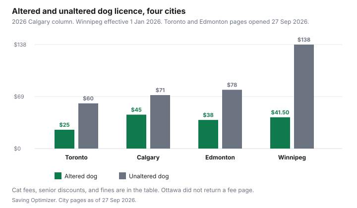

Pets · Canada
Pet Licence Fees in Canadian Cities: Discounts for Spayed and Senior Owners
A licence is a city fee with a tag, not a vet plan and not a landlord’s deposit. Four official fee pages opened on 27 Sep 2026: Toronto, Calgary, Edmonton, and Winnipeg. Ottawa’s registration-fee address returned a block page and no dollars, so Ottawa is out. So is every city that was not opened. Senior discounts are included only where the city printed one. The first-year cost of the animal, separate from this tag, is the dog-cost guide and the adoption guide.
Key takeaways
- Toronto, opened 27 Sep 2026: altered dog $25, unaltered dog $60, altered cat $15, unaltered cat $50. Age 65 and over: 50 percent off the licence, not the $5.65 replacement tag. Unlicensed: a $240 ticket or a maximum fine of $5,000.
- Calgary’s 2026 column: altered dog $45, unaltered dog $71, altered cat $22, unaltered cat $44. No senior line on that table. A false declaration can be fined $500. The bylaw says service and qualified guide dogs are licensed with the fee waived.
- Edmonton: altered dog $38, intact dog $78, altered cat $23, intact cat $78. Senior or income-assistance altered rates on the table are $19 and $12. Fine for no valid licence: $250. Required from six months, indoors included.
- Winnipeg, effective 1 January 2026: sterilized dog $41.50, intact dog $138, sterilized cat $15.75, intact cat $69. No senior discount on that list. The page says GST applies where applicable and does not say these lines are tax-in.
- A microchip does not replace the licence in the cities that printed a rule. Altering the animal is the discount these cities actually price. Low-cost surgery, where a clinic has published it, is the low-cost vet guide.
Why cities licence pets, and what it funds
Each city describes the fee as a way to get a lost animal home, and then lists what the money pays for. Toronto’s fees page says 100 percent of pet licensing fees go to animals that come into its shelters: food, shelter, spay and neuter of animals in care, emergency rescue, returning lost pets, veterinary services in care, adoption, and investigations. Calgary’s licence page says licensing fees pay for animal welfare programs and states that Calgary has the highest return-to-owner and lowest euthanization rates in North America. That comparison is the city’s sentence. This draft did not open a second source that ranks cities, so it is not repeated as an independent finding. Edmonton says the tag includes one free ride home each year and describes food, shelter, medical care, support for rescues, an in-house clinic, and low-income spay programs including a contribution to the Edmonton Humane Society’s PALS program. Winnipeg’s fee page is a price list. It does not include a “where the money goes” paragraph, so this page does not invent one.
The licence is not a substitute for a vet invoice. Vaccines, dental work, and emergency care are other guides. The tag does not pay the vet bill.
City table: dog and cat fees, altered vs unaltered, senior discounts (sourced cities)
Use the column for the city on the tag, not a national average. Calgary’s page prints 2024, 2025, and 2026. Only 2026 is in the table. Unaltered dogs and cats under six months, at the time the Calgary licence is purchased, pay the altered price: $45 and $22 in 2026. That is a puppy and kitten line, not a senior line.
| City | Dog, altered / unaltered | Cat, altered / unaltered | Senior discount | Source |
|---|---|---|---|---|
| Toronto | $25 / $60 | $15 / $50 | Owners 65 and over: 50 percent off the licence fee. Half of these four fees is $12.50, $30, $7.50, and $25. Not on the $5.65 replacement tag. | toronto.ca pet licensing fees, opened 27 Sep 2026. |
| Calgary | $45 / $71 | $22 / $44 | No senior row on the 2026 fee table. | calgary.ca/pets/licences, 2026 column, opened 27 Sep 2026. |
| Edmonton | $38 / $78 | $23 / $78 | Altered pets only. Table prints $19 for a dog and $12 for a cat, annual, for seniors and income assistance. Intact animals have no senior row. | edmonton.ca pet licences, opened 27 Sep 2026. |
| Winnipeg | $41.50 / $138 | $15.75 / $69 | No senior row on the fee list. | Winnipeg Animal Services fee listing, effective 1 Jan 2026, page dated 22 Sep 2026. |

A few lines do not fit the four columns. Toronto: service dog no charge, replacement tag $5.65, and households with income under $50,000 qualify for subsidized or waived fees. The page tells you to call 416-338-7297. It does not print the subsidized dollar, so this page does not either. Calgary: vicious animal licence $315 and nuisance animal licence $125 in 2026, replacement tag $6. Edmonton: nuisance dog $101, vicious dog $251, guide or service dog free, replacement tag $15. Two-year altered dog $76, altered cat $46, senior altered dog $38, senior altered cat $24, intact dog or cat $156. Winnipeg: dangerous dog $110, replacement tag $7, on a 12-month term. The page header says GST will be applied where applicable.
Edmonton’s page says seniors qualify for half-price licences on spayed or neutered pets and also prints $12 for the senior altered cat. Half of the $23 altered cat fee is $11.50. Pay the figure on the fee table you are using, and ask 311 if the two sentences disagree when you renew. This page will not “correct” the city’s $12.
Penalties for not licensing
Toronto may issue a $240 ticket or a maximum fine of $5,000 for failing to license a dog or cat every year. Edmonton’s fine for not having a valid pet licence is $250. Calgary’s licence page says a false declaration, including claiming an intact animal is altered to get the lower fee, may be fined $500. The fine for having no Calgary licence at all was not on that fee page, and it is not filled in from another city. Winnipeg’s fee page does not print a fine. Do not borrow Toronto’s $240 for a Winnipeg tag.
The altered price is the discount these four cities publish. Whether surgery is the right medical decision is a veterinarian’s question, not a bylaw’s. Where a clinic has printed a lower surgery fee, that comparison is the low-cost care guide. The arithmetic that is allowed here is only the licence gap. In Toronto the unaltered dog is $35 more than the altered dog, every year the fees stay as printed. In Winnipeg the gap is $138 minus $41.50, which is $96.50, before whatever GST the page says applies where applicable. A one-year gap is not a reason to rush surgery. It is the number to put beside the surgery quote.
Licence vs microchip
Calgary’s page is the clearest split. Cats and dogs three months or older need a licence. A dog with a microchip or a tattoo does not have to wear the tag. A cat must wear the licence tag if it has no tattoo or microchip, or if the tattoo is not legible. The chip changes the collar rule. It does not cancel the fee. Toronto’s licensing pages say dogs and cats must be licensed and wear a tag. Edmonton asks for a microchip or tattoo number if you have one, includes a tag with the licence, and still requires every cat and dog over six months, even indoor pets, to be licensed and renewed every 12 months. Winnipeg’s fee page does not discuss chips. A chip number, where a shelter or clinic charges to implant one, is not a line these four fee pages priced. Do not move a clinic’s microchip fee into this table.
How to buy and renew
Toronto licences expire 365 days from the start date. You can renew within 60 days of expiry. If you renew before the expiry date, the new licence starts the day after expiry, not on the day you pay. The city uses DocuPet. Online, in person, by phone, or by mail are the channels the licensing overview names. If the animal was altered after the last licence, the fees page says to call 1-855-249-1370 so the profile matches. A refund may be granted if the pet dies or is returned within 30 days of purchase. Moving inside Toronto means updating the address. Moving out means contacting the next city’s licensing office. You do not carry Toronto’s $25 into another city’s bylaw.
Calgary: online with a myID account, in person at Animal Services or, for a renewal, at the Municipal Building at 800 Macleod Trail S.E., or by phone with Visa, Mastercard, or American Express. A licence is not transferred to a new owner. The old one is cancelled and the new owner buys a new licence, in person at Animal Services. Edmonton: online, in person at 13550 163 Street, by mail, or at a financial institution payable to the city’s pet and business licences. You must be 18. The page caps a residence at six cats and three dogs. Seniors may apply online for the reduced altered rate. Income-support applicants and certified assistance dogs are in person. Vicious or nuisance dogs are in person. The Animal Care and Control Bylaw the page describes was in effect as of 19 May 2026. Winnipeg’s fee page does not print the renewal steps. Use the city’s animal services contact rather than a Toronto instruction.
Calgary’s Responsible Pet Ownership Bylaw, the consolidation opened with the fee page, says the owner of a service dog, or a guide dog qualified under Alberta’s Guide Dog Qualifications Regulation, must apply for a dog licence and is exempt from the fee. Two-year licences may be issued at double the annual fee for the year of purchase, not for nuisance or vicious animals. Edmonton already prints two-year prices, so use those instead of doubling in your head.
Checklist
| Check | Why it changes the fee |
|---|---|
| City on the tag | Toronto, Calgary, Edmonton, and Winnipeg are not interchangeable. Ottawa did not load. |
| Altered or not | This is the discount all four tables print. A false “altered” claim is the $500 Calgary line. |
| Your age or income status | Toronto 65-and-over is 50 percent. Edmonton prints senior and income-assistance altered fees. Calgary and Winnipeg do not, on these pages. |
| Service or guide dog | Toronto: no charge. Edmonton: free with validation. Calgary bylaw: apply, fee exempt. Winnipeg: no service line on the fee list opened. |
| Chip versus tag | Calgary’s wear-the-tag rule depends on the chip. The licence fee does not. |
| Renewal date | Toronto: 365 days, renew inside 60 days. Edmonton: every 12 months from six months of age. Do not let a chip convince you the renewal is optional. |
Sources & date stamps
- City of Toronto, Pet licensing fees, opened 27 Sep 2026. Fee table, 50 percent for age 65 and over, income under $50,000, $240 ticket or $5,000 maximum, 365-day term, 60-day renewal, replacement tag $5.65, service dog no charge.
- City of Calgary, Pet licences, opened 27 Sep 2026. 2024, 2025, and 2026 columns. 2026 dog and cat fees used. False-declaration fine up to $500. Microchip and tattoo tag rule. Responsible Pet Ownership Bylaw consolidation: service and guide dogs exempt from the fee; two-year licences at double the annual fee, not for nuisance or vicious animals.
- City of Edmonton, Pet licences, opened 27 Sep 2026. Annual and two-year tables, $250 fine, six-month rule, senior and income-assistance altered fees as printed, bylaw in effect 19 May 2026.
- City of Winnipeg, Animal Services fee listing, effective 1 January 2026, last update stated as 22 September 2026. Dog, cat, dangerous-dog, and replacement-tag lines. GST where applicable. No senior row and no fine.
- City of Ottawa registration fees: the page did not return fee text on 27 Sep 2026. No Ottawa dollar is used.
Frequently asked questions
How much is a dog licence in Toronto?
Toronto’s pet licensing fees page, opened 27 Sep 2026, lists $25 for a spayed or neutered dog and $60 if the dog is not altered. The tag is included. A service dog is no charge. Owners aged 65 and over get 50 percent off the licence fee, which is $12.50 and $30 on those two dog lines, and the senior rate does not apply to the $5.65 replacement tag. The licence lasts 365 days.
Do cats need a licence?
In all four cities whose fee pages opened, yes, once the animal is old enough. Toronto licences every dog and cat. Calgary requires a licence from three months. Edmonton requires one from six months, including indoor pets. Winnipeg’s fee page prints sterilized and intact cat fees for a 12-month term, $15.75 and $69. Ottawa’s fee page did not return, so Ottawa is not in this answer.
Is there a senior discount on pet licences?
Toronto gives owners aged 65 and over 50 percent off the pet licence fee, not the replacement tag. Edmonton prints half-price altered rates for seniors and for people on income assistance: $19 for an altered dog and $12 for an altered cat, on the annual table. Calgary’s 2026 fee table has no senior row. Winnipeg’s fee list, effective 1 January 2026, has no senior row either. Do not apply Toronto’s 50 percent in those cities.
What's the fine for an unlicensed pet?
Toronto’s fees page says failure to license a dog or cat every year may result in a $240 ticket or a maximum fine of $5,000. Edmonton’s licence page says the fine for not having a valid pet licence is $250. Calgary’s licence page prints up to $500 for a false declaration, including saying an intact animal is altered, and does not print the fine for simply having no licence. Winnipeg’s fee page does not print a licensing fine.
Is a microchip enough?
Not on the pages that say a licence is still required. Calgary says a dog with a microchip or a tattoo does not have to wear the tag, and a cat must wear the tag if there is no chip or tattoo or the tattoo cannot be read. The animal still needs the licence from three months. Toronto says dogs and cats must be licensed and wear a tag. Edmonton collects a chip number if you have one and still requires the licence from six months. A chip is identification. It is not the fee.